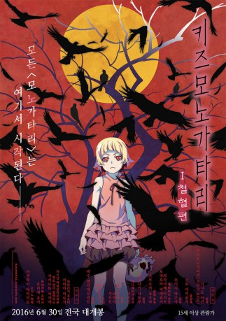

#7781 Kizumonogatari I - Blut und Eisen
 
 IMDB-Wertung: 7.6 / 10
IMDB-Wertung: 7.6 / 10  Metascore: 0
Metascore: 0 
Kizumonogatari erzählt das Leben von Koyomi Araragi, bevor er auf Hitagi Senjougahara traf. Während der Golden Week wird Koyomi von der legendären Vampirin Kiss-Shot-Acerola-Orion Heart-Under-Blade angegriffen und gebissen. Nun steht er vor der schweren Aufgabe, wieder ein Mensch zu werden.
Jahr: 2016
Dauer: 63 Minuten
FSK:
Land: Japan Studio: Azoland PicturesTonspuren: DTS - ,
Untertitel: Deutsch,
Auflösung: 1080p (1920x1080) Größe: 2508 MB
Genre: Action, Komödie, Fantasy, Animation/Trick, Liebe
Regisseur: Tatsuya Oishi, Akiyuki Shinbo
Drehbuch: Nisio Isin
Soundtrack: Satoru Kôsaki
Darsteller:
Datei: X:\HD-Anime-Collections\Kizumonogatari\Kizumonogatari I - Blut und Eisen (2016, FSK, 1920x1080).mkv seit 15.12.2017
Festplatte: Gemischt-01+Anime
 Alle Filme aus Gruppe 'HD-Anime-Collections\Kizumonogatari'
Alle Filme aus Gruppe 'HD-Anime-Collections\Kizumonogatari'